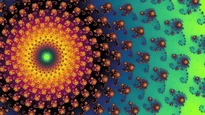
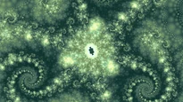
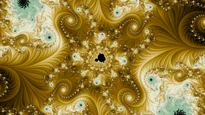

Finding good wallpapers ends with a pool of candidates: every judged picture every mine has made, accumulated across all of them. These are good wallpapers, but a gallery made by simply taking the top scores would be flat. A score rates each picture on its own and knows nothing about the others, so similar pictures score alike and the top of the ranking comes out in clumps. Here are the 24 pictures the gallery judge scores highest:
Phoenix
Julia

Phoenix
Julia
Mandelbrot

Multibrot d = 3

Mandelbrot
Julia
One palette colors a quarter of them. It is a favorite of mine, and the judges learned my taste. Several places appear twice, and six pairs are near-twins. The judge also cannot really tell these pictures apart: all 24 score within 0.02 of one another. Past a certain point, the score stops choosing the gallery, and the diversity rules do.
So instead of taking the top, we write down what a gallery should look like as constraints, and solve for the best-scoring gallery of a given size that satisfies them. The same machinery makes themed galleries: ask for a gallery where every wallpaper is dominantly green, and the solve works inside that color. How good such a gallery can be depends on how much slack the pool has. Choosing the best 100 out of 1,000 green candidates is much better than choosing the best 100 out of 200.
Gallery diversity
Not every judged picture can take a seat. A picture is eligible only if it clears both judges' bars: the wallpaper judge must give it even odds or better of being rated exceptional, and the gallery judge must score it above the gallery's bar. Among the eligible pictures, the solve enforces diversity along these axes:
- Place. One wallpaper per location. Two frames of the same spiral look unrelated as coordinates, so each location is rendered once in a neutral palette and compared as a picture using DINOv2, a vision network trained without labels. Locations that land too close together count as one place.
- Look. No two seated pictures may be near-twins. A viewer reads two pictures as one wallpaper mostly by their colors, so two near-white pictures with different shapes still collide. The test compares the distribution of colors in each picture, weighting hue more heavily than lightness.
- Color. Each of the forty-eight colored cells from Color palettes gets a ceiling of roughly three times its even share of the gallery, and a small floor of about one seat in fifty. No color takes over, and every color the pool can supply has some presence.
- Palette. Near-duplicate palettes are grouped, and a group may take only about one seat in forty. Two maps that differ only in a shade make two wallpapers a viewer reads as one.
- Rendering mode. Every mode except smooth has a floor of seats, so the modes that are harder to score well do not fall out of the collection. Threads is capped at a fifth of the gallery, after one gallery gave it more than seven times its share of the pool.
- Spirals. Spirals are capped at a tenth of the gallery. Without the cap, they would take far more of it.
- Family and plane. Although I think diversity here is important too, the solve turned out to end up with a fairly healthy distribution on its own, so I didn't need to add this constraint.

What the solve optimizes
Among the galleries that satisfy every rule, the solve prefers, in strict order: filling every seat, meeting the mode floors, making the worst picture as good as possible, and only then making the whole gallery as good as possible. The third goal is the one worth dwelling on. A gallery is looked at one wallpaper at a time, so its weakest member describes it better than its average, and optimizing the average would happily trade one mediocre picture for a wonderful one and a bad one. Nothing is ever padded: a seat the pool cannot fill under the rules stays empty.
The algorithm itself is simple. It first seats greedily: whatever the gallery is obliged to hold is seated first, scarcest first, and the rest is filled by walking the eligible pictures in the gallery judge's order and seating each one the rules allow. It then improves the set by exchange, swapping a seated picture for an unseated one whenever that strictly improves the goals above, and following longer chains of exchanges when a seat cannot be filled any other way. The code is in solve.py and augment.py.


Julia d = 5


Julia d = 5


Julia d = 4

Mandelbrot
What the three parts add up to is the subject of Full pipeline.